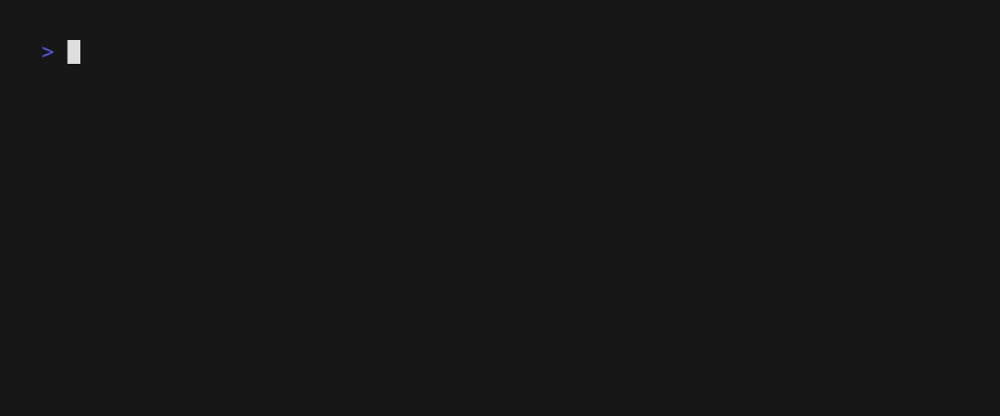

+ def connect(host, port, user, password, db, timeout, + retries, ssl, tls, cert): ^^^^^^^
SCR002 · Bare except detected
A bare except swallows KeyboardInterrupt and SystemExit along with everything else.
avouch --docs →Python code review · git-aware · local · free
Reviews only the files your next commit touches. 17 AST rules, zero dependencies, seconds before git push.

I was paying for a reviewer that spent half its report on code I never wrote.
It queued my real diffs behind everyone else's and
charged per page. I wanted a reviewer that looks only at what I'm about
to push, runs locally in the seconds before git push, and
costs nothing. So I built one.
[ HOW IT WORKS ]
One commit's worth of files: staged, unstaged, or a whole
directory via --not-git. The diff is the scope.
The stdlib ast module parses each changed .py.
17 rules, no dependencies, no network, nothing sent anywhere.
Findings render with file:line and carets. Exit codes
gate CI: 0 clean, 1 findings,
2 error.
[ THE REPORT ]
+ def connect(host, port, user, password, db, timeout, + retries, ssl, tls, cert): ^^^^^^^
SCR002 · Bare except detected
A bare except swallows KeyboardInterrupt and SystemExit along with everything else.
avouch --docs →+ def parse(content: str): ^^^^^^^^^^^^^^^^^^^^
SCR001 · Function returns no value
Every path falls off the end — callers get nothing back, and nothing tells them.
avouch --docs →+ if host and port and user and password and db and timeout: ^^^^^^^^^^^^^^^^^^^^^^^^^^^^^^^^^^^^^^^^^^^^^^^^^^^^^^^^^^
SCR003 · Boolean expression too complex
Six conditions in one if — the
branch that hits says nothing about why.
13 findings · 1 file · 11 rules · reproduce with avouch --not-git
avouch init measures your real code — parameters,
nesting, complexity — and writes an avouch.toml your
repository already passes. The first report says nothing.
$ avouch init
measured 12 maxima across 34 files
wrote avouch.toml
$ avouch
All clean. — 0 findings
No daemon, no cloud. Python 3.10+ and git — that's the whole install.
Baseline snapshots make later runs show nothing but what changed since the snapshot.
Parameters, nesting, complexity, bare excepts, duplicate branches — each explainable, each configurable.
--json emits a stable, versioned document —
readable by anything that parses JSON.
A diff-sized file list parsed by the standard library. There is nothing to warm up.
No. avouch has no network code at all — parsing is standard-library, and nothing leaves the machine.
Only the files your next commit touches run. avouch init
sets limits your repo already passes, and baseline snapshots keep
later reports to what changed.
Yes. --json gives a versioned document and exit codes
gate the pipeline: 0 clean, 1 findings, 2 error.
No. It's a deterministic rule engine over the AST — the same findings for the same code, forever, free.